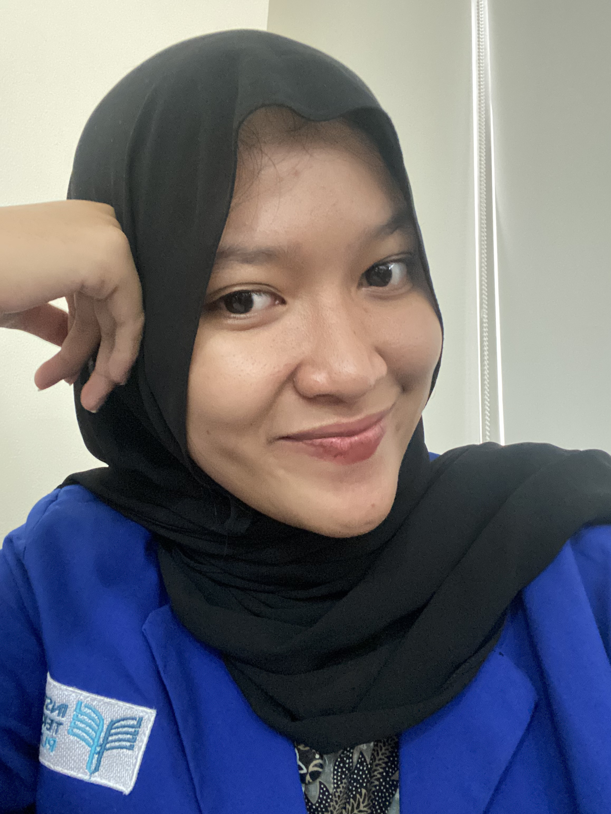

Mahasiswa Information System yang antusias dalam dunia pemrograman web. Sedang belajar membangun aplikasi yang bermanfaat dan mudah digunakan. Suka eksplorasi teknologi baru dan suka berdiskusi soal coding.
Skill
Harapan 2 Semester ke Depan